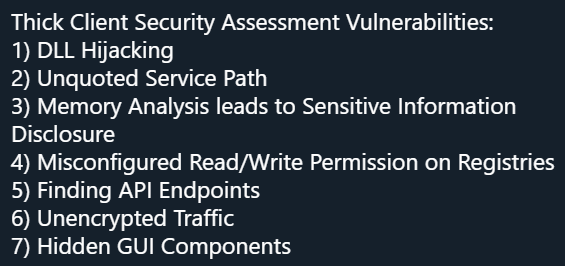

A few days ago I saw a tweet about thick client vulnerability. I am not linking to it because it appeared to be someone new to the industry and very excited.
 The Original TweetWell, most of these are not vulnerabilities. So, I am compiling my tweets into a blog post.
It's important that we only go after actual vulnerabilities and not spread misinformation.
Funnily, I have talked about several of these in a separate blog post named No, You Are Not Getting a CVE for That
1. DLL Hijacking - Usually Not a Vuln
It's only a vulnerability if the application set bad ACLs on the vulnerable path then it's not an issue. More discussion in my previous blog post.
2. Unquoted Service Path - Rarely a Vuln
You don't quote a Windows service path, Windows tries to run C:\program.exe
and so on. Almost never a vulnerability because Standard users cannot write in
the root of the C drive and if they can, then your ACLs are wrong, not the app.
More discussion in my
previous blog post.
3. Memory Analysis Leads to Sensitive Information Disclosure - Usually Not a Vuln
I think this happens when sensitive information is stored in a process' memory. Password managers are popular targets here. Password Managers: Under the Hood of Secrets Management by Independent Security Evaluators is a good example. They still have not gotten back to me after I interviewed with them in 2013 (almost 8 years ago) so I am technically not rejected :D.
Apart from password managers exposing the master password or very few other applications, this is not a vulnerability for your typical thick client app. So what if the app is storing sensitive information in the process? If you have malware running on your machine that can snapshot memory then you have much bigger problems.
4. Misconfigured Read/Write Permission on Registries - Usually Not a Vuln
Registry keys have bad ACLs. There are only a few scenarios where this could be an issue. Typically, when a higher privileged process (think Windows service running as SYSTEM) can be influenced by modifying a registry key that can be written by standard users. This "influencing" must lead to privilege escalation. In other words, it needs to enable the standard user to do something they should not be able to do.
In most cases, this is not an issue because either the registry keys are not vulnerable or they result in something the user can already do.
5. Finding API Endpoints - Not a Vuln
This is not a vulnerability. It's a great step in thick client analysis. The thick client application talks to the server and we need to proxy the thick client.
This is something we should do. We can find unauthenticated calls, privilege escalation (e.g., create admin as a normal user), or APIs that should not be called by user.
6. Unencrypted Traffic - Usually a Vuln
This one is usually a vulnerability. The most popular example is when the application does not use TLS.
7. Hidden GUI Components - 50/50
This is usually done by manipulating the response coming from the server or messing with the application with tools like WinSpy.
This can be a vulnerability when you enable something in the app that is
functional and lets you do something you should not be able to. The and is
an important part of the sentence. If we enable a button but it does nothing,
this is not a vulnerability.
For example, we modify the response from the server and set admin: true to
enable the admin interface in the thick client. If we can interact with the
interface and do things (e.g., send requests that are accepted server-side) then
we have a vulnerability.
What Did We Learn Here Today?
1.5 (#7 counts as half) out of 7 were vulnerabilities. Not so great. We should do better.